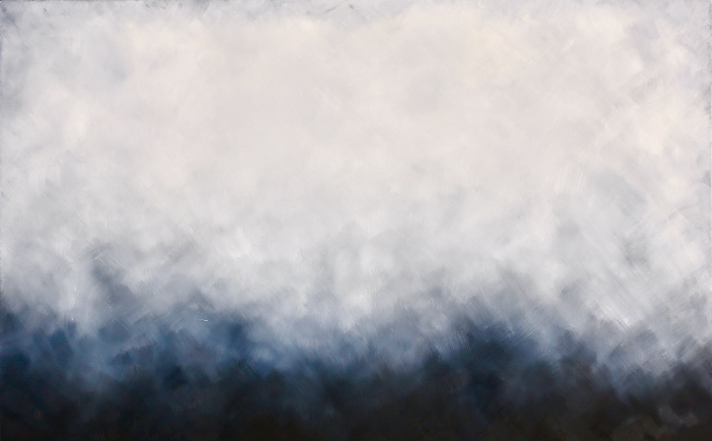
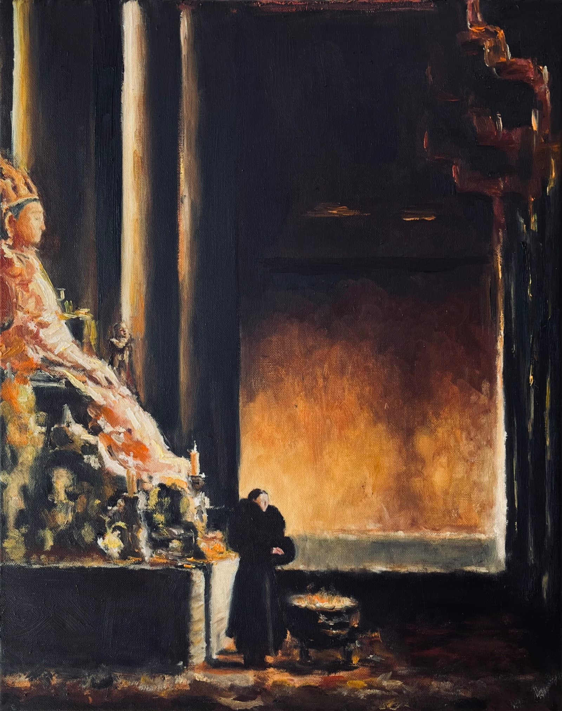
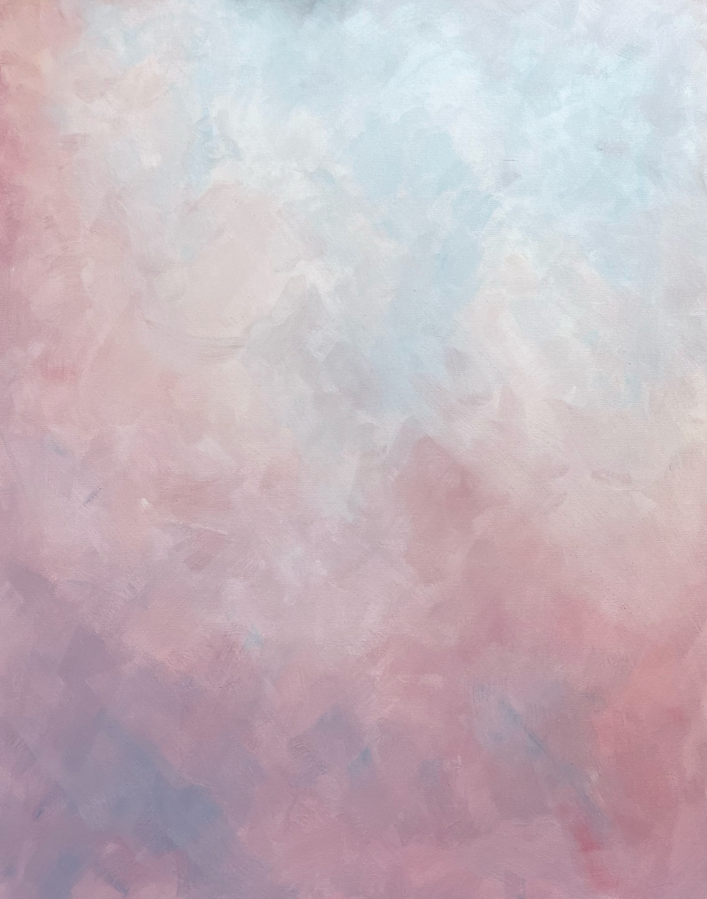
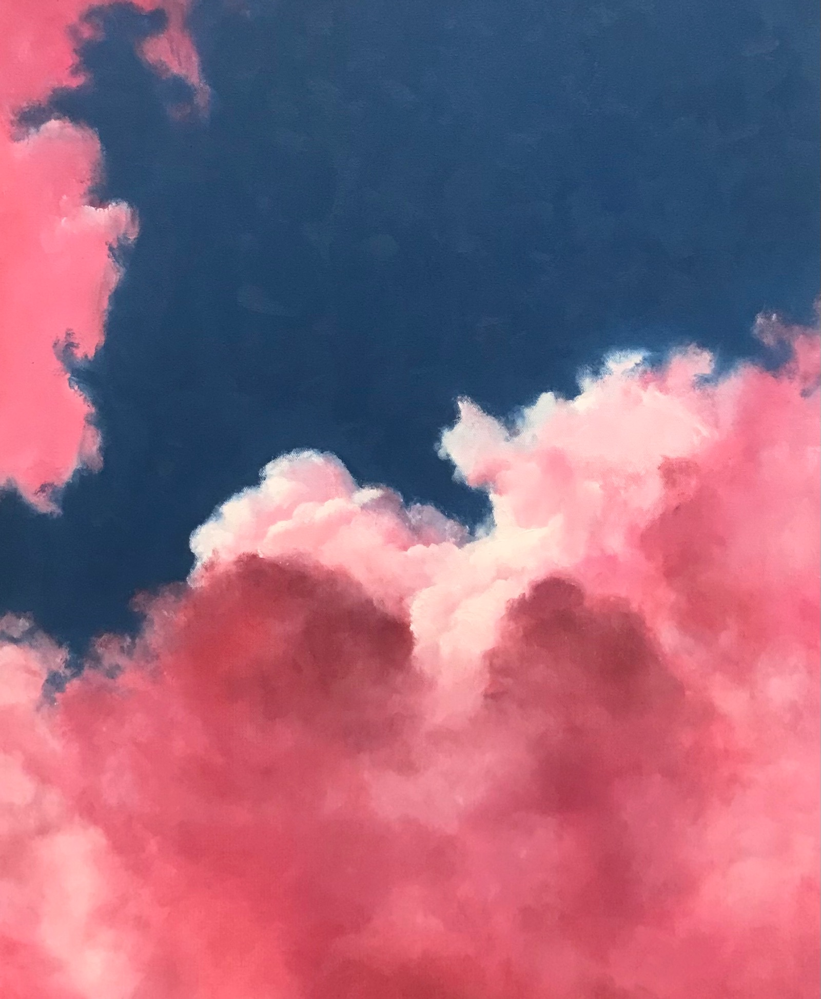
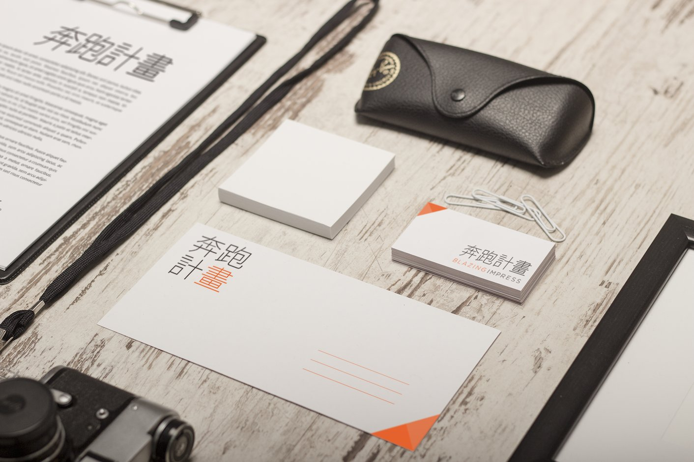

Each canvas begins with removal. What remains is not a decision but a survival — the last image that refused to be erased.

Ethereal
Narrative
Chromatic
Atmospheric Geometric
Geometric
Oil on canvas.
Form in space.
The rest is noise.
Form follows silence.
Each canvas begins with removal. What remains is not a decision but a survival — the last image that refused to be erased.

Ethereal
Narrative
Chromatic
Atmospheric
Geometric
Reduction until only intent remains. Every element earns its place — or it does not exist.

IdentityWhat I make is shaped by what I practice. Discipline is not a constraint — it is the only path to freedom.
I don't make things to be seen. I make things because not making them is no longer an option.
I make things that try to hold silence without explaining it. The work is not minimalism as style — it is minimalism as discipline. A practice of not-adding, not-saying, not-filling.
Influenced by Zen aesthetics, wabi-sabi, and the Japanese concept of 間 (ma) — the meaningful pause between things. The space between the sword strokes. The silence between the notes.

Shinai · 竹刀
Producing · 音樂
Industrial and ambient — sound as architecture. Texture without decoration, weight without excess. Music as a practice of restraint, not expression.